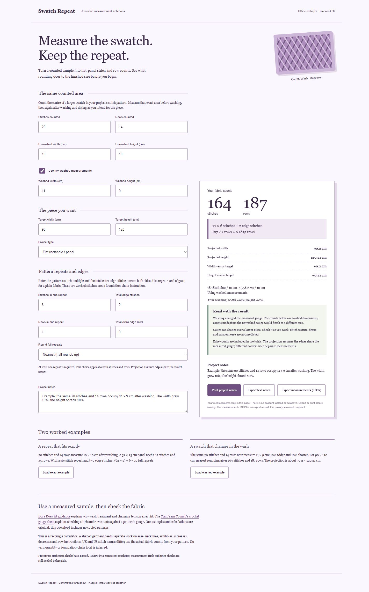

Crocheters working out flat panels from their own measured swatch
Measure the swatch. Count the repeats.
A local measurement notebook for counted stitches and rows, centimetre measurements before and after washing, and a flat panel's target size. Choose nearest, down or up rounding for stitch and row repeats, add total edge counts, and keep printable project notes. The tool warns about changed gauge and shaped garments. Proposed one-off digital price; this is an unreviewed prototype.
No live sale.
Offline HTML calculator with printable project notes and text/JSON exports
This preview cannot take payment or place an order. The download offer still needs customer validation.

Crochet gauge and repeat notebook
Calculate whole repeats and edge counts, then see the projected dimensions and difference from your target.
Read this first
- Rectangular projection only; cannot generally rescale shaped garments
- Assumes the same stitch pattern and gauge throughout, including counted edges
- No foundation-chain or turning-chain inference
- No yarn quantity estimate
Read all product limits
- Does not predict fabric drape, stretch, ease or washing behaviour beyond the supplied sample
- Counts must be whole numbers; at least one full repeat is required
- Measurements use centimetres
- JSON export is a record; this prototype has no JSON import
- Not reviewed by a competent crocheter
What’s included
- Downloadable tool that runs in your browser
- Unwashed and washed swatch measurement fields
- Stitch and row repeats with total edge counts
- Nearest/down/up repeat rounding
- Projected width and height with differences from target
- Two original worked examples
- Printable measurement and project notes
- Text-note and measurement JSON downloads
A look at the product.
This public page shows a limited fictional sample. Full tools, puzzle answers and downloadable packs are kept in the private local preview.
Calculate whole repeats and edge counts, then see the projected dimensions and difference from your target.
The sample is read-only. A native Shopify product and checkout have not been connected.
Before you decide.
Which measurements should I use?
Count stitches and rows in the centre of a larger swatch made in the project's stitch pattern. Measure that same counted area before washing and after washing/drying as intended for the piece. Select washed measurements when available.
What does an edge count mean?
It is the total extra worked stitches across both sides, or extra rows outside the repeat. For a six-stitch repeat with one extra stitch at each side, enter repeat 6 and total edges 2. Foundation and turning chains depend on the pattern.
Can I resize a sweater with it?
It can project a rectangle's gauge. Necklines, sleeves, ease, increases, decreases and grading each need separate work; a shaped project shows an explicit warning.
Does it matter whether my pattern uses UK or US stitch names?
Use counts from the actual stitch fabric your pattern specifies. This calculator uses measured counts and centimetres; it does not translate stitch names.
Can I reopen a measurements JSON export?
This prototype exports a measurement record but has no import control. Use the printed or text notes to retain your calculation, or enter the saved measurements again.
Can I buy this here?
This is a storefront prototype with a local cart and checkout simulation. It does not accept payments, collect your address or place an order. A native Shopify product and checkout still need to be connected.
What does the proposed price mean?
It is a price to test with potential customers. Demand, support costs and any physical production costs have not yet been validated.